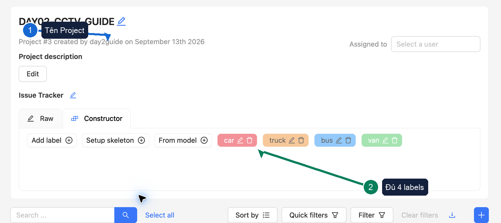
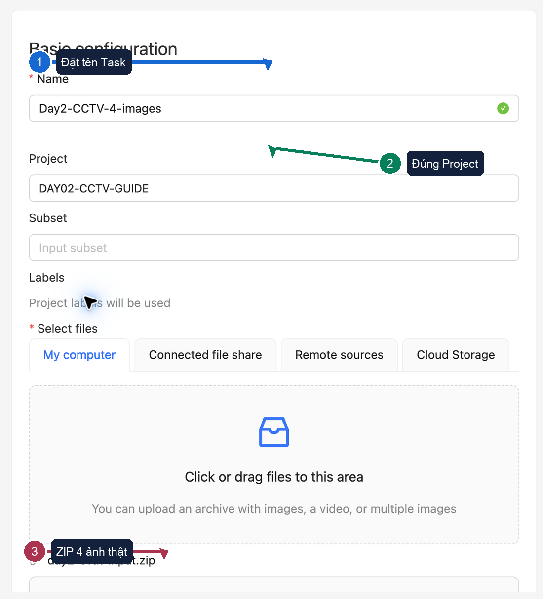
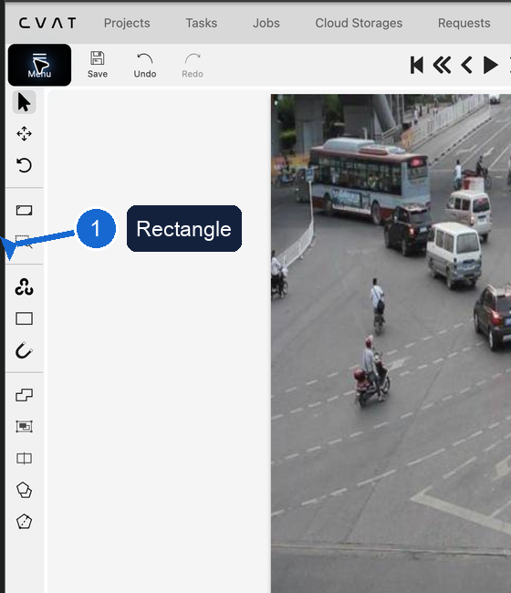
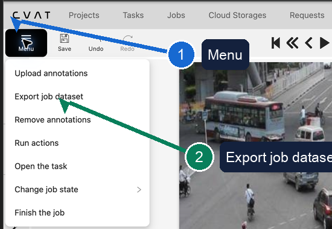

Mục tiêu: hoàn thành trọn đường đi của dữ liệu, từ quyết định gán nhãn đến kết quả dự đoán. Bạn có thể làm cá nhân hoặc theo cặp; mỗi người vẫn phải tự gán nhãn cả bốn ảnh.
Bạn không cần sửa mã nguồn. Các chỉ số IoU và mAP chỉ giúp tìm vấn đề trong dữ liệu; chúng không phải điểm đạt của người học.
1. Chuẩn bị
CVAT
- Docker Desktop đã chạy.
- Mở
http://localhost:8080. - Không đưa mật khẩu vào ảnh chụp hoặc báo cáo.
Ảnh thực hành
- Lấy trực tiếp
data/day2-cvat-input.zip. - Gói đã chứa đúng bốn ảnh.
- Chưa cần mở sổ thực hành để lấy ảnh.
Phạm vi dữ liệu
- Không thay ảnh được cấp.
- Không dùng ảnh cá nhân hoặc dữ liệu nội bộ.
- Không đưa gói xuất thô hay trọng số mô hình lên kho mã.
Chọn hình thức: cá nhân hoặc theo cặp. Theo cặp không có nghĩa là chia ảnh hoặc chia lớp; mỗi người làm một bản độc lập rồi mới đổi gói xuất để đối chiếu.
2. Tạo dự án và bốn lớp
1
Chọn Projects (Dự án) → + → Create a new project (Tạo dự án mới). Đặt tên
DAY02-SOLO-<MSSV> hoặc DAY02-<PAIR_ID>-<MSSV>.2
Tạo đúng bốn lớp theo thứ tự:
car (ô tô con), truck (xe tải), bus (xe buýt), van (xe van).3
Với mỗi lớp, thêm ba thuộc tính kiểu Select (Danh sách chọn):
visibility (mức nhìn thấy), boundary (quan hệ với mép ảnh), review_state (trạng thái xem lại).
| Thuộc tính | Giá trị | Cách dùng |
|---|---|---|
visibility (mức nhìn thấy) | clear (rõ), occluded (bị che), unclear (không rõ) | Ghi mức bằng chứng có thể quan sát. |
boundary (quan hệ với mép ảnh) | inside (nằm trong ảnh), truncated (bị mép ảnh cắt) | Cho biết vật thể có bị khung ảnh cắt hay không. |
review_state (trạng thái xem lại) | confident (tự tin), needs_review (cần xem lại) | Đánh dấu quyết định cần quay lại, không dùng để đoán lớp. |
3. Tạo tác vụ và nạp bốn ảnh
1
Trong dự án vừa tạo, chọn + → Create a new task (Tạo tác vụ mới) và đặt tên
Day2-CCTV.2
Tại Select files (Chọn tệp), chọn
day2-cvat-input.zip. Kiểm tra đúng dự án rồi chọn Submit & Open (Tạo và mở).3
Mở Job #1 (Công việc số 1) và xác nhận có bốn khung hình.

4. Vẽ hộp và điền thuộc tính
1
Chọn Rectangle (Hình chữ nhật), chọn lớp rồi vẽ hộp sát phần phương tiện nhìn thấy. Không đoán phần bị che.
2
Chọn hộp vừa vẽ, mở DETAILS (Chi tiết) và điền đủ ba thuộc tính. Nếu chưa chắc, chọn
needs_review (cần xem lại) và ghi lý do.3
Dùng phím
D để về ảnh trước, F để sang ảnh sau và chọn Save (Lưu) thường xuyên. Mục tiêu của cả bốn ảnh là 40–60 vật thể.
Dừng độc lập: trước khi xem bài của người khác hoặc nhận bộ nhãn đối chiếu, hãy lưu, tự kiểm tra và xuất bài của chính mình. Đây là điều kiện để kết quả đối chiếu còn có ý nghĩa.
5. Xuất hai gói từ cùng một trạng thái
1
Chọn Menu (Trình đơn) → Export job dataset (Xuất dữ liệu công việc).
2
Xuất Ultralytics YOLO Detection và chọn kèm ảnh. Gói này giữ lớp và tọa độ hộp.
3
Xuất lần hai theo CVAT for images 1.1. Gói CVAT gốc giữ ba thuộc tính mà YOLO không lưu.

6. Chạy sổ thực hành theo thứ tự
- Kiểm tra gói bốn ảnh đã dùng trong CVAT.
- Tải gói YOLO của bạn lên và kiểm lớp, hộp, số ảnh.
- Tải gói CVAT gốc lên và kiểm đủ ba thuộc tính.
- Đọc một dòng YOLO rồi đổi tọa độ chuẩn hóa về điểm ảnh.
- Huấn luyện thử YOLO11n trên ba ảnh và dự đoán trên một ảnh.
- Chọn nguồn đối chiếu, tính IoU, xem lớp khác nhau và các hộp không ghép được.
- Sửa một quyết định dựa trên minh chứng, hoàn thành báo cáo và đưa kết quả lên kho GitHub cá nhân.
Lưu ý: bốn ảnh chỉ đủ để kiểm tra đường đi của dữ liệu. Kết quả mAP không phải phép đánh giá mô hình dùng trong thực tế; IoU cũng không phải ngưỡng đạt của học viên.
7. Đối chiếu: cá nhân hoặc theo cặp
Cá nhân
Sau khi đã khóa bản xuất của mình, dùng gói nhãn đối chiếu do Lab Coach (người hướng dẫn thực hành) cung cấp. Không dùng lại chính gói của mình làm nguồn đối chiếu.
Theo cặp
Sau khi cả hai người đã khóa bản xuất độc lập, đổi gói YOLO cho nhau. Mỗi người tự chạy phép đối chiếu và tự viết kết luận.
- IoU: cho biết hai hộp chồng khít đến mức nào.
- Mức đồng thuận lớp: cho biết hai phía có chọn cùng lớp hay không.
- Hộp không ghép được: gợi ý vật thể thiếu, trùng hoặc khác phạm vi.
Hai người đồng thuận vẫn có thể cùng sai. Hãy dùng ảnh, quy tắc lớp và nhật ký quyết định để kết luận.
8. Xử lý sự cố nhanh
| Sự cố | Cách xử lý |
|---|---|
| CVAT không mở | Làm lại một lần theo CVAT_SETUP.md; nếu vẫn lỗi, gửi ảnh lỗi đã che thông tin riêng tư cho Lab Coach. |
| Gói YOLO thiếu ảnh hoặc nhãn | Quay lại CVAT, xuất lại và chọn kèm ảnh; không sửa trực tiếp tệp TXT. |
| Gói CVAT thiếu thuộc tính | Bổ sung thuộc tính trong CVAT rồi xuất lại cả hai gói từ cùng trạng thái. |
| Chưa có nguồn đối chiếu | Giữ bản xuất độc lập và báo Lab Coach; không dùng bài của chính mình để thay thế. |
| Huấn luyện chậm hoặc hết bộ nhớ | Lưu lỗi đã che thông tin riêng tư và dùng phương án dự phòng do Lab Coach cung cấp. |